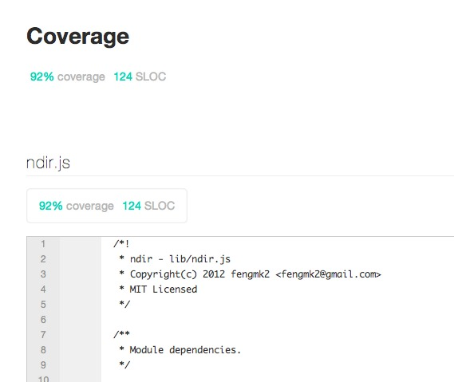
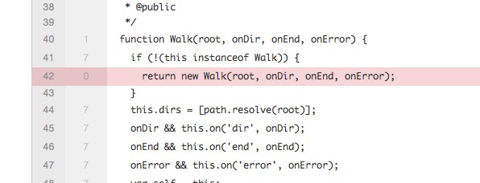

mocha + jscoverage
mocha在Release 0.13.0 已经支持 HTMLCov 和 JSONCov 两种reporter, 那么显然可以非常简便地将 jscoverage 整合到mocha中, 进行代码覆盖率测试了.
如何做?
参照 mocha 的 Best practices, 在 Makefile 中配置所有命令:
使用
jscoverage命令行程序转换源代码lib-cov: @rm -rf ./$@ @jscoverage lib $@代码中根据环境变量
JSCOV判断载入的模块是经过转换的lib-cov模块, 如: index.jsmodule.exports = process.env.JSCOV ? require('./lib-cov/ndir') : require('./lib/ndir');增加
test-cov命令, 设置reporter 为html-covtest-cov: lib-cov @JSCOV=1 $(MAKE) test REPORTER=html-cov > coverage.html && open coverage.html执行
make test-cov命令享受测试报告吧, 92%的覆盖率, 还不错吧.


完整Makefile
本文完整的Makefile 示例来自 ndir
SRC = $(shell find lib -type f -name "*.js")
TESTS = test/*.js
TESTTIMEOUT = 5000
REPORTER = spec
test:
@NODE_ENV=test ./node_modules/.bin/mocha \
--reporter $(REPORTER) --timeout $(TESTTIMEOUT) $(TESTS)
test-cov: lib-cov
@JSCOV=1 $(MAKE) test REPORTER=html-cov > coverage.html && open coverage.html
lib-cov:
@rm -rf ./$@
@jscoverage lib $@
clean:
rm -rf lib-cov
rm -f coverage.html
.PHONY: test test-cov
有爱
^_^ 希望本文对你有用
原文链接: /blog/2012/02/mocha-with-jscoverage.html